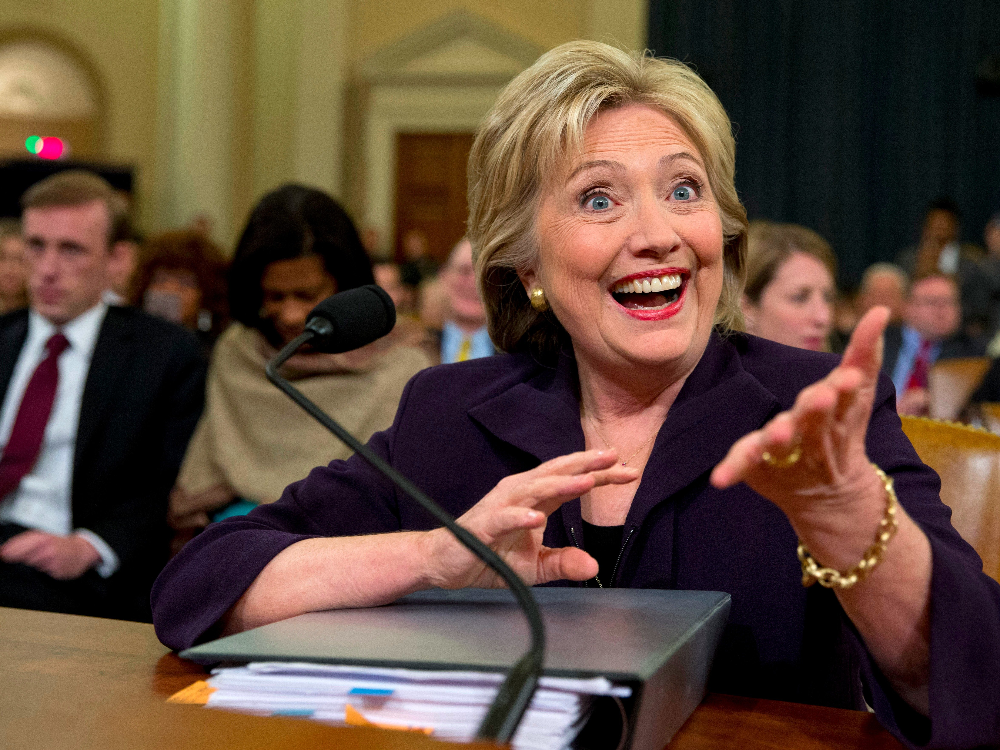

There's been a sudden turnaround in how voters view Hillary Clinton's handling of Benghazi
Former US Secretary of State Hillary Clinton's marathon testimony in front of the US House Select Committee on Benghazi appears to have worked in her political favor.
According to a new Wall Street Journal/NBC News poll released Tuesday, the number of Americans who remained unsatisfied with the Democratic presidential front-runner's handling of the 2012 terrorist attack on the American consulate in Benghazi, Libya, which left four Americans dead, has dropped significantly.
The poll found that 38% of Americans were unsatisfied with Clinton's answers to questions about the attack, down from 44% who were unsatisfied before her 11-hour testimony in Congress last month.
Among swing voters, according to NBC, the percentage who said that they are not satisfied with her handling of the issue plunged from 84% at the beginning of October to 40% now. Just 23%, however, said they are satisfied.
Among Democratic primary voters, those numbers were even better for Clinton.
The poll showed that 72% of likely Democratic primary voters were satisfied with Clinton's answers on the subject, compared to just 58% who previously said they were satisfied before her testimony.
Though Republicans maintain that the ongoing investigation into Clinton's role in the controversy are unrelated to her bid for the presidency, the ranking Republican members of the committee have found themselves on the defensive following a series of gaffes from high-profile members that cast the numerous investigations in a political light.
In an interview with Fox News in September, Kevin McCarthy (R-California), the House of Representatives' majority leader, said the committee's investigation of the attacks had helped lower Clinton's poll numbers.
"Everybody thought Hillary Clinton was unbeatable, right?" he asked at the time.
He said: "But we put together a Benghazi special committee, a select committee. What are her numbers today? Her numbers are dropping. Why? Because she's untrustable. But no one would have known any of that had happened, had we not fought."
Clinton's support has risen since her testimony in front of the committee, as well as her well-received performance during the first Democratic debate last month. Tuesday's WSJ/NBC poll showed Clinton's support among likely Democratic primary voters jumping to 62%, up from 58% last month.